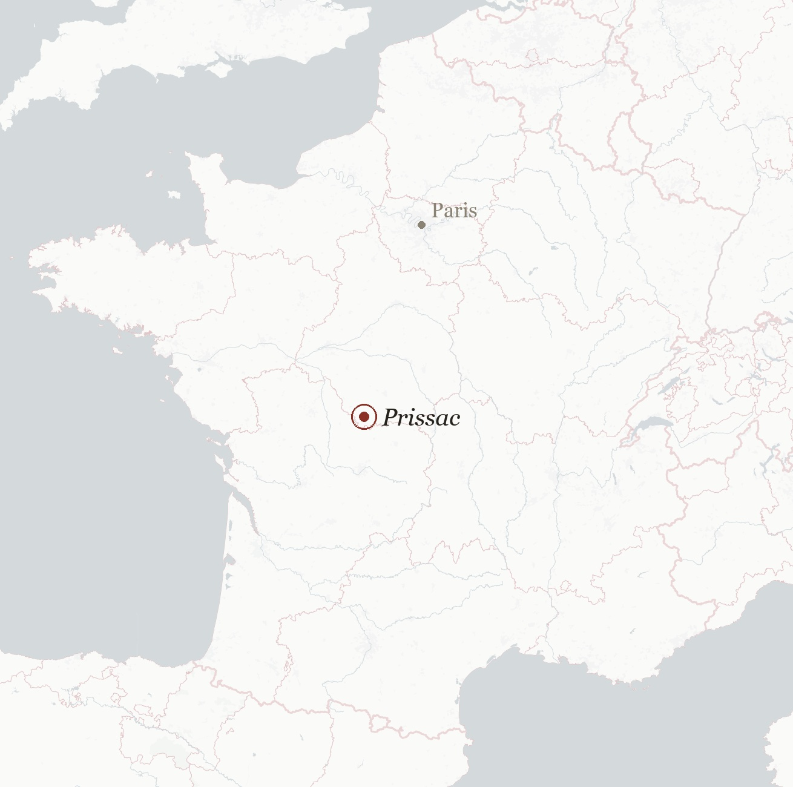
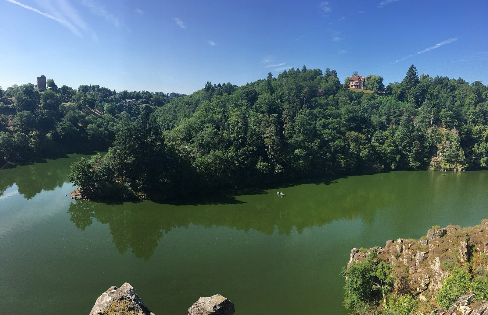
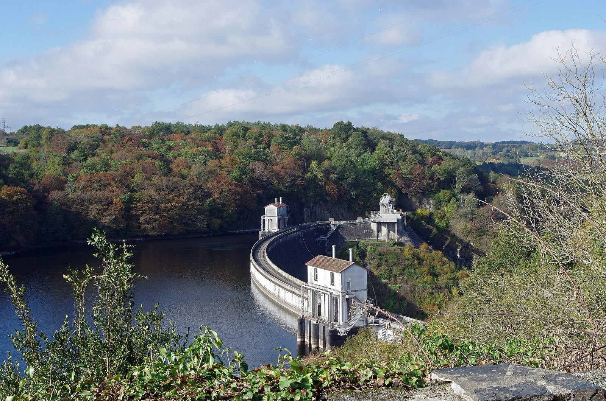
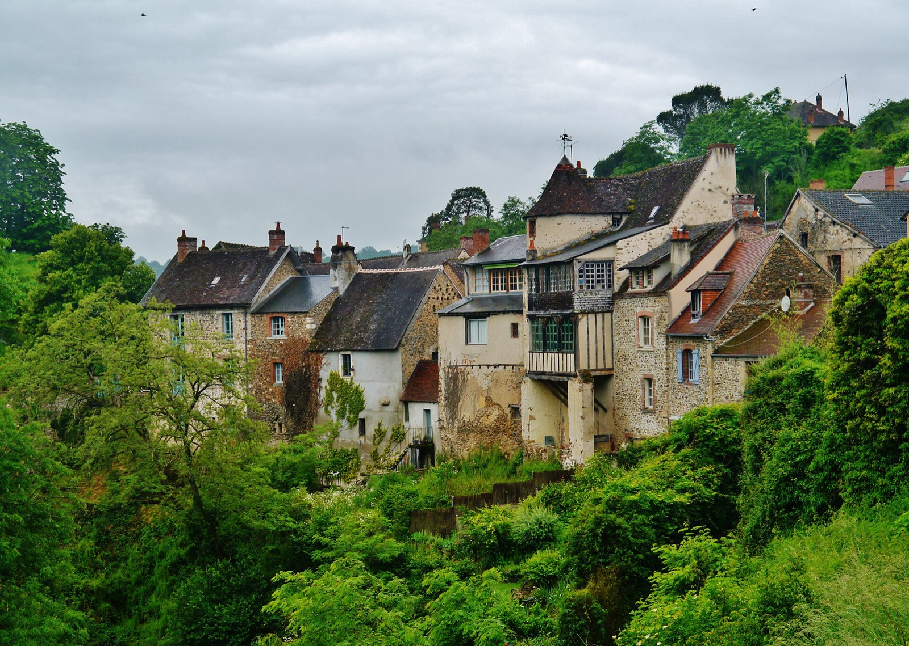
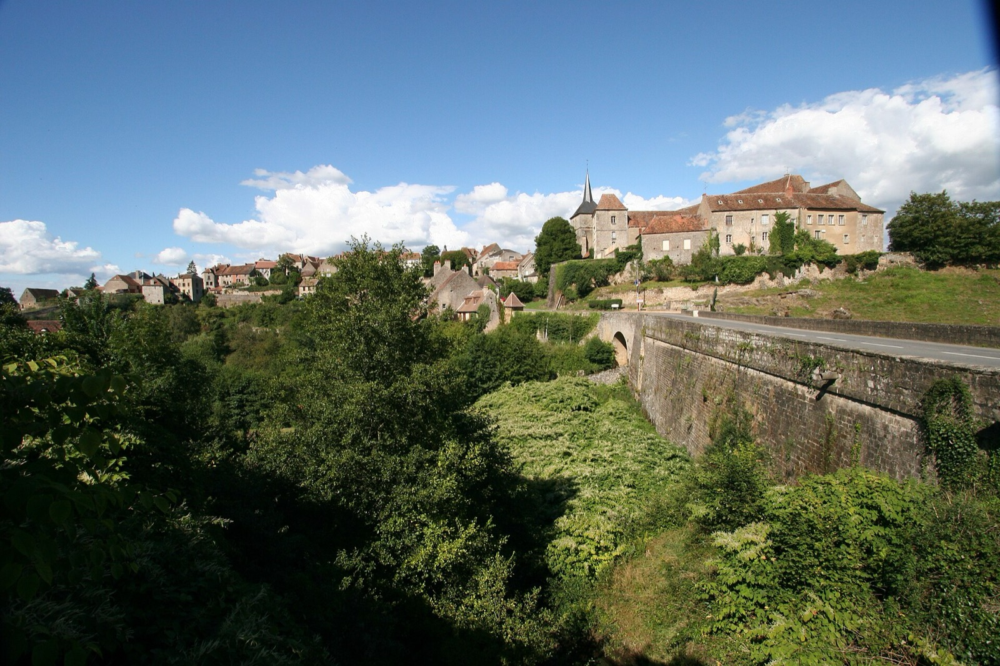
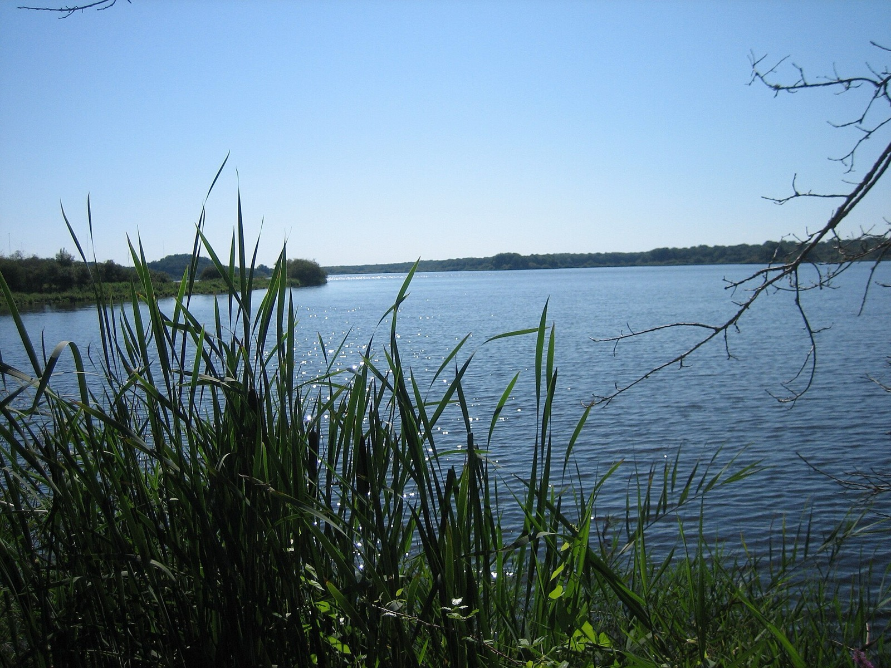

Chapter IV
The Valley
They call it secret France - the green country most visitors drive through on their way to the crowded south. We never understood the hurry.

The valley itself
The Creuse valley had museums, châteaux, swimming and fishing lakes, riding, and restaurants that took local produce seriously - and half the time we seemed to have it to ourselves. It is greener than the south, and quieter. Half an hour from the house lay the huge Lac de Chambon, made by damming the Creuse near the pretty town of Eguzon; it gave the area its hydro-electric power and gave us pontoons to swim to, sailing, water-skiing and pedalos - children of all ages, catered for.


Places we kept going back to
St Benoît-du-Sault, ten kilometres away, is officially one of the prettiest villages in France - medieval, perched on a craggy granite outcrop, all tiny winding streets. Argenton-sur-Creuse, twenty minutes off, had the trains, good restaurants and a Roman excavation with its museum. Gargilesse-Dampierre drew the painters, as it drew George Sand before them. Le Blanc, the elegant château town twenty-five minutes away, had a specialised fish market and canoes for hire on the river. And for the bigger days out: Limoges within the hour for porcelain and its cathedral, Poitiers at ninety minutes for Futuroscope, and Oradour-sur-Glane, preserved in silence as a memorial to the Second World War - sobering, and worth it.


A thousand lakes
Fontmorand sat inside the Brenne National Park - the land of a thousand lakes. Deer, wildcats, turtles and otters lived around us; eagles were not rare, and the buzzards came close enough to startle you. There was a public fishing lake directly opposite the house with some giant carp in it, which we mention because every angler who ever visited asked. Fishing, walking, canoeing, riding, cycling; and for the golfers, Val de l'Indre, La Porcelaine and Limoges-St Lazare were all within the hour.

Regional photographs via Wikimedia Commons: the Creuse valley at Crozant by Floppy36 (CC BY-SA 3.0); the Éguzon dam by Daniel Jolivet (CC BY 2.0); Gargilesse-Dampierre by Zairon (CC BY-SA 4.0); the Étang de la Mer Rouge by Bert76 (CC BY-SA 3.0); St Benoît-du-Sault by Nitot (CC BY-SA 3.0). All other photographs are the family's own.